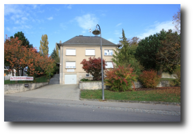
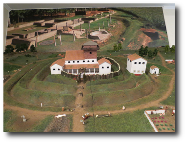

"Ausgriewermusee"
Das Ausgriewermusee ist zusammen mit unserem Atelier im ehemaligen Pfarrhaus in Nospelt untergebracht. Hier werden Fundstücke von verschiedenen Grabungsstellen gezeigt. In einigen thematischen Räumen kann die Archäologie unserer Gegend entdeckt werden.
Neben dem Ausstellungs- bereich befindet sich im Museum auch ein Konferenzraum in welchem Vorträge gehalten werden und in welchem wir auch Gruppen und Schulklassen emfangen können.
Öffnungszeiten
- 07-08/2020: Mi-So von 13:00 Uhr - 18:00 Uhr

...thematisch gestaltete Räume
...und Nachbildungen von Fundstätten laden zu einem spannenden Rundgang ein.
Spezielle Veranstaltungen
13/04/2020 - Keltische Handwerker im Ausgriewermusée
:: Kalender
- (abgesagt)
22-29/08/2020
Jugendlager
:: Mitgliedskarte

:: Wir werden unterstützt von
- Ministère de la Culture
- Ministère de l'Éducation nationale, de l'Enfance et de la Jeunesse
- Ministère de l'Économie
- Commune de Kehlen
- Commune de Koerich
- Commune de Mamer
- Service National de la Jeunesse
- Centre National de la Recherche Archéologique